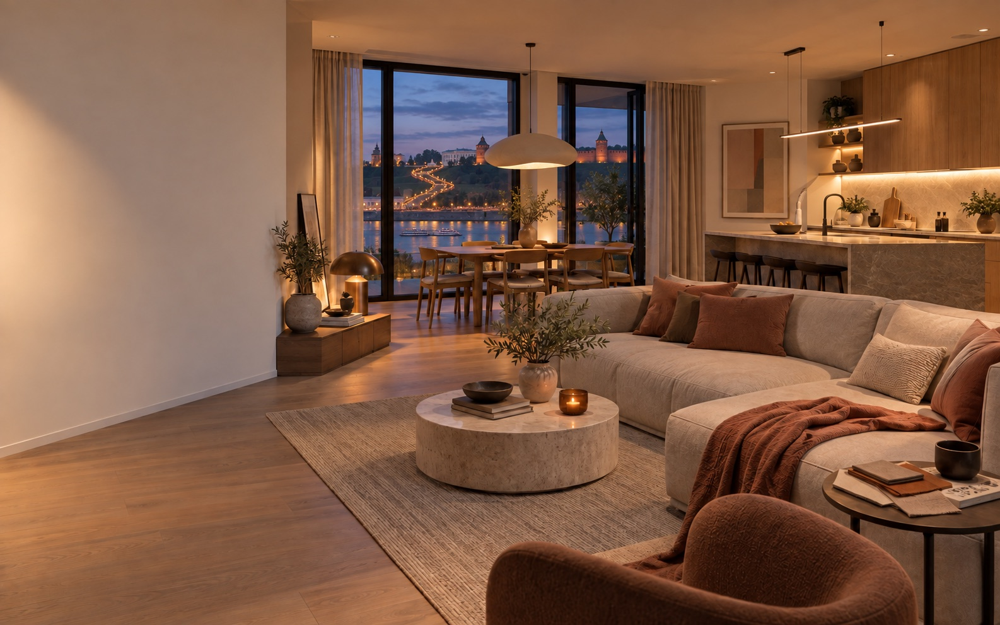
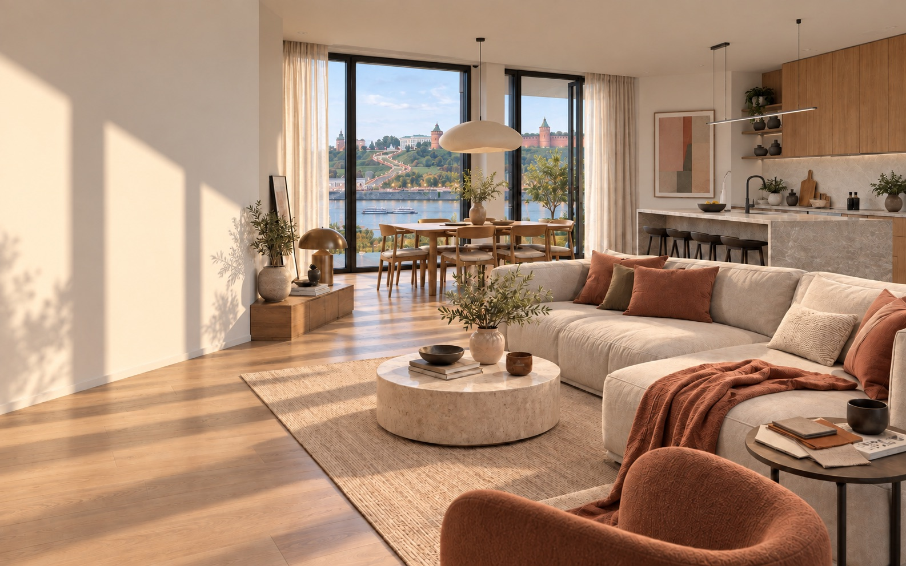
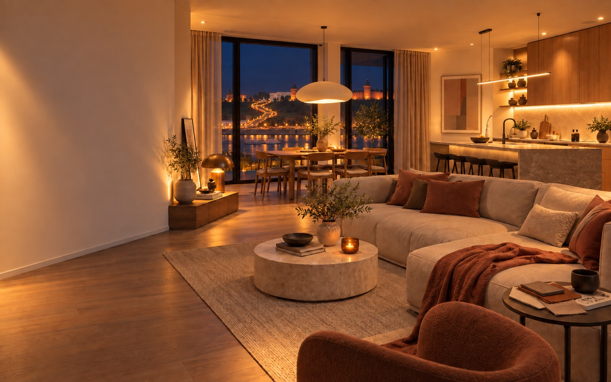
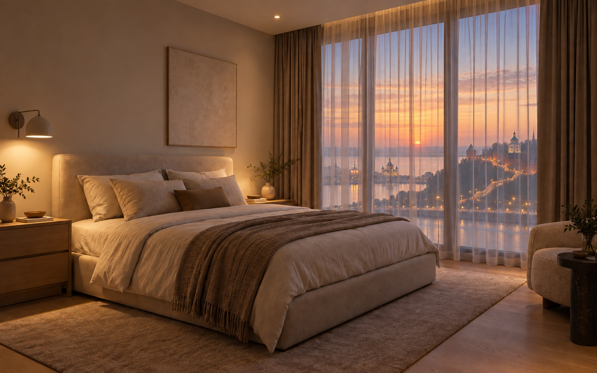
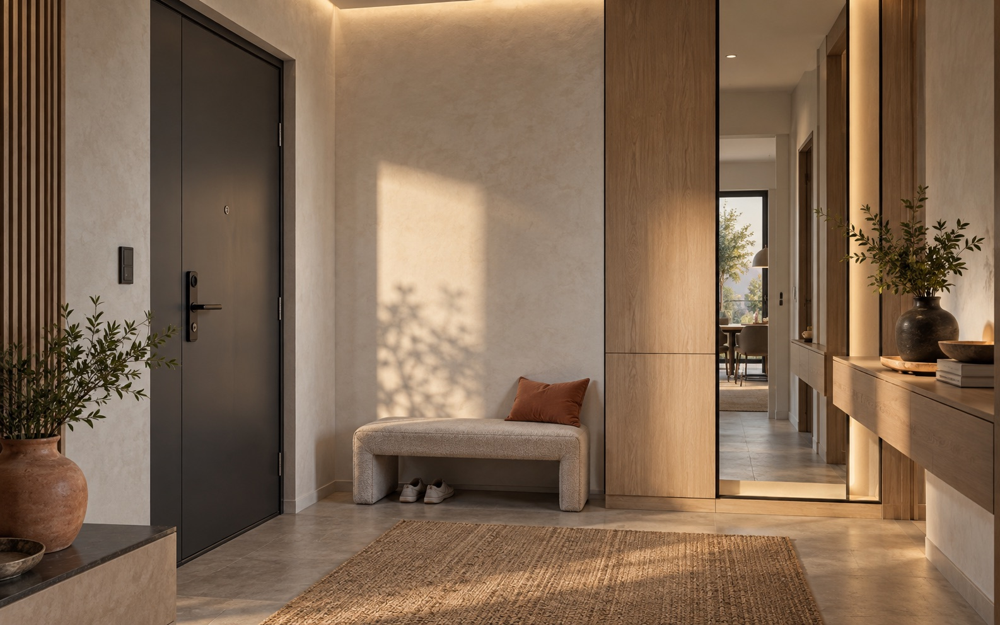

Короткий бриф
Смотрим планировку, визуализации и инженерные вводные. Выясняем привычки клиента, которые действительно влияют на проект.



Подключаемся к проекту вовремя, переводим желания заказчика в технические решения и бережём то, за что он выбрал именно Ваш дизайн.
Умный дом не должен появляться в проекте как «ещё один подрядчик». Наша задача — снять технические риски, которые обычно возвращаются к дизайнеру на стройке.
Не обещаем «всё возможно». Сначала проверяем архитектуру, инженерные системы и сценарий жизни — затем предлагаем ровно тот объём, который можно красиво и надёжно реализовать.
Свет, карнизы, климат и датчики встраиваются в сценарий и композицию пространства, а не требуют отдельного «технического» дизайна.
Так дизайнеру проще говорить с заказчиком: показывать не «функции», а будущие привычки в конкретном пространстве.
Сценарий объединяет группы света, шторы, климат и медиа, если это нужно клиенту. Результат — в одном понятном действии, а не в десяти клавишах.
Автоматика не отменяет красивую текстильную концепцию. Она помогает ей работать в правильный момент: утром, вечером, в режиме кино или когда дома никого нет.

Не нужно отдавать полный проект «на переработку». Достаточно включить короткую техническую сверку до выпуска финальных листов.
Это не дополнительная нагрузка на дизайнера. Мы собираем вопросы, объясняем варианты и возвращаем согласованную техническую логику в работу.

На встрече с клиентом показываем функции в человеческих сценариях и честно обозначаем технические границы. Это снимает с дизайнера роль диспетчера между заказчиком, монтажниками и инженерией.
Подключаемся как инженерный партнёр дизайнера: спокойно, по этапам и с понятной зоной ответственности.
Смотрим планировку, визуализации и инженерные вводные. Выясняем привычки клиента, которые действительно влияют на проект.
Собираем решения по свету, шторам, климату, воде и управлению до того, как они превращаются в переделки.
Объясняем возможные сценарии и границы реализации без технического жаргона и без давления на бюджет.
Ведём инженерную часть, координируемся с участниками стройки и возвращаемся с конкретикой, а не вопросами «как сделать?».
Работаем с четырьмя экосистемами. Сначала определяем сценарии, стадию ремонта и бюджет, затем выбираем техническую основу вместе с заказчиком.
Голосовые команды, приложение и сценарии для совместимых устройств. Подходит, когда клиент хочет начать с понятных повседневных функций.
Это ориентиры для выбора архитектуры. Состав системы и интеграции подтверждаются после изучения проекта.
В разных объектах уместны разные уровни автоматизации: от деликатных сценариев света и штор до комплексного управления инженерией. Выбор зависит от стадии ремонта, задач клиента и архитектуры объекта.
Голосовое управление, приложение и привычные посты можно объединить в один понятный пользовательский опыт — только если это поддерживает сценарий, а не выглядит эффектом ради эффекта.
Пришли план и визуализации, когда удобно. Я посмотрю, на каком этапе лучше подключить инженерию, и подготовлю короткий список решений для первой совместной встречи.
Отправить проектСостав решений определяется проектом, стадией объекта и совместимостью инженерных систем. Работаем в Нижнем Новгороде и по согласованным объектам.